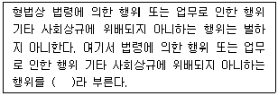

경비지도사-1차(법학개론,민간경비론) (2006-11-19 기출문제)
1과목: 법학개론
1. 다음 중 유권해석에 해당하지 않는 것은?
- 사법해석
- 입법해석
- 논리해석
- 행정해석
(정답률: 62%)

2. 다음 중 형법의 규범적 성격으로 타당하지 않은 것은?
- 재판규범
- 위법규범
- 평가규범
- 행위규범
(정답률: 29%)
3. 형의 선고유예를 받은 날로부터 2년이 경과한 때에는 어떠한 효과가 발생하는가?
- 무죄로 간주한다.
- 형집행이 완료된 것으로 간주한다.
- 형의 선고는 효력을 잃는다.
- 면소된 것으로 간주한다.
(정답률: 31%)
4. 다음 중 몽테스키외의 3권분립론의 가장 중심된 사상은?
- 국민주권주의
- 직접민주주의
- 의회제도의 확립
- 국민의 자유권 보장
(정답률: 25%)
5. 다음 중 매매계약상 매도인의 의무라고 할 수 없는 것은?
- 매수인에게 매매의 목적이 된 권리를 이전할 의무
- 매수인에게 매매목적물을 인도할 의무
- 특정물매매의 경우, 매매목적물을 매수인에게 인도하기까지 선량한 관리자의 주의로 보관할 의무
- 계약금을 교부할 의무
(정답률: 39%)
6. 민법상의 행위무능력자가 아닌 자는?
- 상습도박자
- 만 19세인 자
- 정신병자로서 금치산선고를 받은 자
- 의사능력이 없는 자
(정답률: 34%)
7. 법에 대한 설명으로 틀린 것은?
- 당사자의 의사에 의해 그 적용을 배제할 수 있는 법이 임의법이다.
- 민법은 실체법이고 민사소송법은 절차법이다.
- 법은 강제규범이라는 점에서 도덕과 구별된다.
- 법령에 규정이 없는 경우 법 해석에 의해 성실이 비슷한 다른 법령의 규정을 적용하 는 것을 준용이라 한다.
(정답률: 48%)
8. 범죄의 피해자가 수사기관에 범죄사실을 신고하여 그 소추를 촉구하는 의사표시는?
- 고소
- 신고
- 진정
- 고발
(정답률: 60%)
9. 다음 중 노동조합 및 노동관계조정법상 “노동조합”에 대한 정의로 맞는 것은?
- 근로자가 근로조건의 유지 ㆍ 개선 기타 근로자의 경제적 ㆍ 사회적 지위의 향상을 도모 할 목적으로 조직하는 단체
- 근로자가 주체가 되어 자주적으로 조직한 단체로서 경비의 주된 부분을 사용자로부터 원조받는 단체
- 공제 ㆍ 수양 기타 복리사업만을 목적으로 근로자가 자주적으로 조직한 단체
- 근로자가 주체가 되는 주로 정치운동을 목적으로 하는 단체
(정답률: 53%)
10. 상법상 자기명의로써 타인의 계산으로 물건 또는 유가증권의 매매를 영업으로 하는 자 는?
- 중개업자
- 위탁매매인
- 대리상
- 운송주선인
(정답률: 39%)
11. 다음 중 노동쟁의의 수단에 속하지 않는 것은?
- 동맹파업
- 중재
- 직장폐쇄
- 태업
(정답률: 35%)
12. 관습법의 성립요건이 아닌 것은?
- 일정한 관행이 존재하여야 한다.
- 입법기관인 국회의 의결을 거쳐야 한다.
- 선량한 풍속 기타 사회질서에 반하지 않아야 한다.
- 국민 일반이 법규범으로서의 의식을 가지고 지켜야 한다.
(정답률: 44%)
13. 다음 중 민법상 부당이득의 요건이 아닌 것은?
- 타인의 재산 또는 노무로 인하여 이익을 얻을 것
- 수익은 법률행위에 의하여 얻은 것일 것
- 그 이익이 법률상의 원이 없는 것일 것
- 타인에게 손해를 가할 것
(정답률: 22%)
14. 다음 중 형사소송의 주체라고 보기 힘든 것은?
- 법원
- 검사
- 피고인
- 변호인
(정답률: 58%)
15. 자유심증주의에 대한 설명으로 옳은 것은?
- 증거의 수집은 법관의 자유로운 판단에 의한다.
- 증거의 증거능력의 유무는 법관의 자유로운 판단에 의한다.
- 증거의 증명력은 법관의 자유로운 판단에 의한다.
- 공찬정의 자백은 당연히 증거능력을 가진다.
(정답률: 27%)
16. 다음 사례에서 손해배상책임에 관한 설명으로 틀린 것은?
- A경비업체 직원인 갑은 순찰 중 을을 강도로 오인하고 구타하여 전치 6주의 상해를 입혔다면 갑은 불법행위에 따른 손해배상책임을 부담한다.
- 위 사례에서 A경비업체는 갑의 선임과 감독에 관하여 상당한 주의를 기울였거나 상 당한 주의를 하여도 손해가 발생하였다는 사실을 입증하지 못하는 한 사용자책임에 따른 손해배상책임을 부담한다.
- 우리 판례는 갑의 선임과 감독에 고나하여 상당한 주의를 기울였다는 사실의 입증 ㆍ 증명책임을 A 경비업체에 부담시키고 있으며, 이에 관한 사업자의 주장을 폭넓게 인 정하고 있다.
- 이 경우 피해자인 을은 A 경비업체를 상대로 하거나, 경비원인 갑을 상대로 손해배상 을 청구할 수 있으며, 만약 A 경비업체로부터 손해배상을 받은 경우에는 갑을 상대로 손해배상청구를 할 수 없게 된다.
(정답률: 28%)
17. 청원(請願)에 관한 다음 설명 중 틀린 것은?
- 청원은 반드시 문서로 해야 한다.
- 법률의 제정은 청원할 수 있으나, 법률의 폐지는 청원이 불가능하다.
- 국회에 청원하고자 할 때는 국회의원의 소개를 얻어야 한다.
- 청원을 받은 국가기관은 이를 심사 ㆍ 처리하고 상대방에게 그 결과를 통지할 의무를 진다.
(정답률: 28%)
18. 다음 중 라드부르흐(G. Radbruch)가 제시한 법의 이념에 속하지 않는 것은?
- 정의
- 법적 안정성
- 법집행과정의 투명성
- 합목적성
(정답률: 58%)
19. 상법상 회사에 대한 설명으로 옳지 않은 것은?
- 주식회사에는 유한책임사원과 무한책임사원이 있다.
- 회사의 종류는 합명회사, 합자회사, 주식회사와 유한회사가 있다.
- 회사라 함은 상행위 기타 영리를 목적으로 하여 설립한 사단법인을 의미한다.
- 회사는 본점소재지에서 설립등기를 함으로써 성립한다.
(정답률: 30%)
20. 권리에 대한 설명으로 틀린 것은?
- 권리의 본질에 관해 오늘날의 통설은 권리법력설이다.
- 고대에 있어서의 법률관계는 의무의 측면에서 규율되었다.
- 현대 법학에서의 법률관계는 권리본위의 측면에서 규율한다.
- 이익설은 예링이 이익법학과 목적법학의 이론에 입각하여 주장한 학설이다.
(정답률: 42%)
21. 형법상 여럿이 함게 모여 거액의 도박을 한 경우는 다음 중 어디에 해당하는가?
- 공동정범
- 간접정범
- 공모공동정범
- 필요적 공범
(정답률: 20%)
22. 행정조직에 관한 설명으로 맞는 것은?
- 자문기관이 제공하는 의견은 행정관청을 구속한다.
- 지방자치단체의 권한에는 자치조직권, 자치입법권, 자치행정권, 자치사법권이 있다.
- 특정 행정목적을 계속 수행하기 위해 인적, 물적 시설의 종합체에 독립된 인격이 부여된 공공단체를 영조물 법인이라 한다.
- 서울특별시는 지방자치단체 중 특별지방자치단체에 해당한다.
(정답률: 15%)
23. 다음( )안에 알맞은 것은?

- 정당행위
- 정당방위행위
- 긴급피난행위
- 자구행위
(정답률: 39%)
24. 다음 중 국제법규에 관한 헌법상 기본원칙이 아닌 것은?
- 대한민국은 국제평화의 유지에 노력한다.
- 대한민국은 침략적 전쟁을 부인한다.
- 헌법에 의하여 체결 ㆍ 공포된 조약과 일반적으로 승인된 국제법규는 국내법보다 하위 의 효력을 가진다.
- 외국인은 국제법과 조약이 정하는 바에 의하여 그 지위가 보장된다.
(정답률: 42%)
25. 경비업법상 일반경비원이 수행하는 사무가 아닌 것은?(오류 신고가 접수된 문제입니다. 반드시 정답과 해설을 확인하시기 바랍니다.)
- 시설경비업무
- 신변보호업무
- 특수경비업무
- 기계경비업무
(정답률: 10%)
26. “갑”이 전파상에 고장난 라디오를 수리의뢰한 경우, 전파상 주인이 수리대금을 받을 때 까지 “갑”에게 라디오의 반환을 거부할 수 있는 권리는?
- 저당권
- 질권
- 지역권
- 유치권
(정답률: 36%)
27. 본인과 무권대리인 사이에 실제로는 대리권이 없음에도 불구하고 대리권의 존재를 추 측할 수 있을만한 사정이 있는 경우에는 무권대리행위의 상대방이 기대하는 대로 대리의 효력을 발생케 하는 제도는?
- 표현(표견)대리
- 복대리
- 쌍방대리
- 법정대리
(정답률: 36%)
28. 우리나라 헌법의 전문(前文)에서 규정하고 있는 내용으로 옳지 않은 것은?
- 대한민국 임시정부 법통과 4.19 이념의 계승
- 각인의 기회균등
- 권력의 분립
- 조국의 평화적 통일
(정답률: 32%)
29. 다음 중 무효가 아닌 것은?
- 의사무능력자의 법률행위
- 불공정한 법률행위
- 법률행위의 내용의 중요 부분에 착오가 있는 의사표시
- 통정허위표시
(정답률: 17%)
30. 사권(私權)을 그 작용인 법률상의 효력에 따라 분류할 때 해당되지 않는 것은?
- 형성권
- 청구권
- 지배권
- 인격권
(정답률: 43%)
31. 다음 중 죄형법정주의의 파생적 원칙이 아닌 것은?
- 관습형법금지의 원칙
- 부정기형의 원칙
- 유추해석금지의 원칙
- 효력불소급의 원칙
(정답률: 34%)
32. 다음 중 법치주의의 구현 내용이 아닌 것은?
- 포괄적 위임입법
- 법률에 의한 기본권의 제한
- 국가권력의 분립
- 위헌법률심사제
(정답률: 13%)
33. 소의 종루에 관한 설명 중 형성의 소에 관한 것은?
- 특정한 권리 또는 법률관계의 존재나 부존재의 확인을 요구하는 소
- 원고가 피고에 대하여 특정한 급부이행을 청구하는 소
- 판결에 의하여 기존의 법률상태의 변경, 소명을 청구하는 소
- 법률관계를 증명하는 서면의 진부확인을 요구하는 소
(정답률: 19%)
34. 친고죄에 관한 설명으로 옳은 것은?
- 피해자의 법정대리인은 고소할 수 있다.
- 고소는 구술로 할 수 없다.
- 고소를 취소한 자도 다시 고소할 수 있다.
- 친고죄에 대하여는 범인을 알게 된 날로부터 1년을 경과하면 고소하지 못한다.
(정답률: 28%)
35. 대리권이 존재하지만 그 범위를 정하지 않은 경우에 대리인이 할 수 없는 것은?
- 보존행위
- 이용행위
- 개량행위
- 처분행위
(정답률: 50%)
36. 사회적 법익에 관한 죄에 해당하는 것은?
- 사기죄
- 실화죄
- 절도죄
- 범인은닉죄
(정답률: 39%)
37. 다음 중 채권의 발생원인과 그 연결이 올바른 것은?
- 사용대차 - 당사자 일방이 재산권을 상대방에게 이전할 것을 약정하고 상대방이 그 대금을 지급할 것을 약정함으로써 효력 발생
- 소비대차 - 당사자 일방이 상대방에게 목적물을 사용, 수익하게 할 것을 약정하고 상 대방이 이에 대하여 차임을 지급할 것을 약정함으로써 그 효력 발생
- 도급 - 당사자 일방이 어느 일을 완성할 것을 약정하고 상대방이 그 일의 효과에 대 하여 보수를 지급할 것을 약정함으로써 효력 발생
- 고용 - 당사자 일방이 상대방에 대하여 금전이나 유가증권 기타 물건의 보관을 위탁 하고 상대방이 이를 승낙함으로써 그 효력 발생
(정답률: 47%)
38. 다음 중 민사소송의 심리와 재판의 과정을 지배하는 원칙이 아닌 것은?
- 변론주의
- 당자가처분권주의
- 공개주의
- 실체진실주의
(정답률: 36%)
39. 다음 중 법의 규범성에 관한 설명으로 맞는 것은?
- 법은 개인의 행위규범일 뿐 사회규범은 아니다.
- 법은 작위나 부작위를 지시하거나 금지하는 행위규범이다.
- 법을 위반할 경우 강제력이 동원되며 양심 등 인간내면을 직접 강제할 수 있다.
- 법의 이념 중 정의와 법적 안정성이 충돌될 때에는 항상 법적 안정성이 우선되어야 한다.
(정답률: 42%)
40. 국가배상에 관한 다음 설명 중 맞는 것은?
- 도로건설을 위해 자신의 토지를 수용당한 개인은 국가 배상청구권을 가진다.
- 공무원이 직무수행 중에 적법하게 타인에게 손해를 입힌 경우 국가가 배상책임을 진 다.
- 도로 ㆍ 하천 등의 설치 또는 관리에 하자가 있어 손해를 받은 개인은 국가배상을 청구 할 수 있다.
- 공무원은 어떤 경우에도 국가배상청구권을 행사할 수 없다.
(정답률: 29%)
2과목: 민간경비론
41. 미국의 민간경비 발전과정에 대한 설명으로 틀린 것은?
- 민간경비 발전 초기 위조화폐단속
- 제2차 세계대전으로 인한 군수산업의 발전
- 권위주의적인 경찰 통제
- 18세기 금광개발로 인한 금괴수송을 위한 철도경비
(정답률: 83%)
42. 자물쇠의 종류 중 안전도가 가장 낮은 자물쇠는?
- 돌기자물쇠(Warded Locks)
- 핀날름쇠자물쇠(Pin Tumbler Locks)
- 숫자맞춤식 자물쇠(Combination Locks)
- 암호사용식 자물쇠(Code Operated Locks)
(정답률: 75%)
43. 다음 설명 중 타당하지 않은 것은?
- 1차원적 경비란 경비원과 같은 단일예방체제에 의존하는 것을 말한다.
- 단편적 경비란 포괄적이고 전체적인 계획 하에 필요할 때마다 손실예방 등의 역할을 수행하는 것이다.
- 반응적 경비란 단지 특정한 손실이 발생하는 사건에만 대응하는 것이다.
- 총체적 경비란 특정의 위해요소와 관계없이 언제 발생할지도 모르는 상황에 대비하여 인적경비와 기계경비를 종합한 표준화된 경비형태이다.
(정답률: 80%)
44. 범죄행위자 측면에서의 컴퓨터 범죄의 특징은?
- 범행연속성
- 죄의식 희박
- 발각증명 곤란성
- 고의 입증 곤란성
(정답률: 84%)
45. 다음 중 민간경비에 대한 설명으로 틀린 것은?
- 민간경비의 목적은 범죄예방에 있다.
- 민간경비업무로는 시설경비, 호송경비, 신변보호, 기계경비, 특수경비 등이 있다.
- 민간경비의 수혜대상은 일반시민이다.
- 우리나라에서는 경찰관이 부업으로 민간경비원의 업무를 수행할 수 없다.
(정답률: 86%)
46. 다음 중 경찰의 방범능력한계에 해당되지 않는 것은?
- 경찰인력의 부족
- 민생치안부서 근무기피 현상
- 경찰에 대한 주민의 이해 부족
- 경찰방범 장비 확충 및 현대화
(정답률: 75%)
47. 다음 중 우리나라 경비산업에 대한 설명으로 가장 올바르지 못한 것은?
- 경비업법은 경비업의 육성, 발전과 그 체계적 관리로 경비업의 건전한 운영에 이바지 함을 목적으로 한다.
- 기계경비산업이 점차 활성화되고 있다.
- 국가중요시설의 효율성 제고 방안으로 특수경비업무가 신설되었다.
- 민간경비산업이 공경비에 비하여 성장하지 목하고 있다.
(정답률: 89%)
48. 다음 설명 중 틀린 것은?
- 계약경비는 자체경비에 비해서 운용경비가 절감된다.
- 계약경비는 자체경비보다 인력운용이 쉽고 고용주에 대한 충성심이 강하다.
- 자체경비는 계약경비에 비해 이직률이 낮은 편이다.
- 자체경비는 고용주의 요구에 신속하게 대처할 수 있다.
(정답률: 86%)
49. 다음 설명 중 틀린 것은?
- 경비시설물에 있어서 외부침입이 가장 빈번한 곳은 창문이다.
- 감금장치 중 전자장치가 설치되어 있어 일정시간에만 작동하는 것은 기억식 잠금장치 이다.
- 금고실 외벽을 만드는데 사용하는 방호재료는 강화 콘크리트이다.
- 경보장치는 침입시간의 지연을 그 목적으로 한다.
(정답률: 86%)
50. 다음 중 컴퓨터 안전관리상의 관리적 대책에 해당되지 않는 것은?
- 근무자들에 대하여 정기적으로 배경조사를 실시한다.
- 회사 내부의 컴퓨터 기술자, 사용자, 프로그래머의 기능을 각각 분리한다.
- 컴퓨터 출력물이나 펀치카드 등에 대한 안전을 고려하여, 잘못 인쇄된 경우에도 반드 시 분쇄기를 이용하여 폐기 처분한다.
- 각종 회의를 통하여 컴퓨터 안전관리의 중요성을 인식시킨다.
(정답률: 63%)
51. 기업에서 자체경비조직의 유지 및 기능 확장의 필요성을 평가할 때 고려사항이 아닌 것 은?
- 경비안전의 긴급성
- 예상되는 경비활동
- 회사성장의 잠재성
- 경비회사와의 협력체제
(정답률: 46%)
52. 현행 경비업법상 민간경비의 업무로 규정되지 않는 것은?
- 신변보호업무
- 호송경비업무
- 시설경비업무
- 정보보호업무
(정답률: 69%)
53. 경비시설물의 출입문에 설치되는 안전장치는 어떤 기준에 따라 달라지는가?
- 건물높이
- 건물의 크기
- 경비구역의 중요성
- 화재위험도
(정답률: 75%)
54. 하나의 문이 작동할 경우, 전체 문이 작동하는 보안잠금 장치는?
- 전기식 잠금장치
- 일체식 잠금장치
- 기억식 잠금장치
- 패드록
(정답률: 86%)
55. 다음 중 연한 노란색을 띠며, 안개가 자주 끼는 지역에 주로 사용되는 것은?
- 나트륨등
- 수은등
- 석영수은등
- 백열등
(정답률: 78%)
56. 한국에서 외국경비회사와의 기술제휴로 기계경비시대가 본격적으로 열린 시기는?
- 40-50년대
- 60년대 이후
- 70년대
- 80년대
(정답률: 83%)
57. 다음 중 한국의 민간 경비업에 관한 설명으로 틀린 것은?
- 개정된 경비업법 상의 경비업무는 시설경비업무, 호송경비업무, 신변보호업무, 기계경비업무, 특수경비업무 등 5종이다.
- 인력경비 보다 기계경비의 비중이 크다.
- 민간 경비원의 법적 지위는 일반 시민과 같다.
- 86 아시안게임, 88올림픽을 치른 이후로 민간 경비업이 날로 발전하고 있다.
(정답률: 83%)
58. 경비조사 업무에 있어 조사자들이 갖추어야 할 요건이 아닌 것은?
- 관련 분야의 높은 지식을 가지고 있을 것
- 조사 대상시설물과 집행절차를 숙지하고 있을 것
- 조사 진행의 각 단계에 대한 사전계획을 수립할 것
- 조사대상시설물에서 경비근무를 해본 경험이 있을 것
(정답률: 77%)
59. 경비위해요소에 대한 설명으로 틀린 것은?
- 경비위해 요소는 일반적으로 자연적 위해와 인위적 위해, 특정한 위해 등으로 구분할 수 있다.
- 경비위해요소의 분석에 있어서 첫 번째 단계는 위해요소를 인지하는 것이다.
- 경비위해요소의 평가 및 분석에 있어서 경비활동의 비용효과분석은 실시할 필요가 없다.
- 경비위해요소는 경비대상의 안전성에 위험을 끼치는 제반요소를 의미한다.
(정답률: 90%)
60. 기계경비시스템의 장점이 아닌 것은?
- 24시간 경비가 가능
- 소요비용의 절감효과
- 경비에 효과적으로 감시할 수 있다.
- 사건발생시 현장에서 신속대처 가능
(정답률: 100%)
61. 경비조명 설치 시 유의사항으로 틀린 것은?
- 보호조명은 경계구역 내의 지역과 건물에 적합하도록 설계되어야 한다.
- 경비조명은 침입자의 탐지 외에 경비원의 시야를 확보하는 기능이 있으므로 경비원의 감시활동, 확인점검활동을 방해하는 강한 조명이나 각도, 색깔 등을 고려해야 한다.
- 인근지역을 너무 밝게 하거나 영향을 미침으로써 타인의 사생활을 침해하지 않도록 해야 한다.
- 도로, 고속도로, 항해수로 등에 인접한 시설물의 조명장치는 통행에 영향을 미치더라도 모든 부분을 구석구석 비출 수 있도록 설치되어야 한다.
(정답률: 82%)
62. 다음 중 우리 사회의 범죄주체 변화에 관한 설명으로 틀린 것은?
- 화이트칼라 범죄 증가
- 범죄방법의 조직화, 지능화 경향
- 민원성 시위와 집단행동 증가
- 청소년범죄와 마약범죄는 경찰의 단속으로 감소
(정답률: 85%)
63. 다음 중 컴퓨터 범죄 유형의 설명으로 틀린 것은?
- 컴퓨터의 부정조작 - 컴퓨터 시스템 자료처리 영역 내에서의 정상적인 운영을 방해하 는 행위
- 컴퓨터 파괴 - 컴퓨터 자체, 프로그램, 컴퓨터 내부와 외부에 기억되어 있는 자료를 개체로 하는 파괴행위
- 컴퓨터 스파이 - 자료를 권한 없이 획득하거나 불법이용 또는 누설하여 타인에게 재산적 손해를 야기 시키는 행위
- 컴퓨터 부정사용 - 자신의 컴퓨터로 불법적인 스팸메일 등을 보내는 행위
(정답률: 72%)
64. 다음 중 컴퓨터범죄의 예방대책으로 틀린 것은?
- 컴퓨터범죄를 처벌하기 위한 관계법령의 개정 및 제정
- 프로그래머(programmer)와 오퍼레이터(operator)의 상호 업무분리 원칙 준수
- 컴퓨터범죄 전담수사관의 수사능력 배양
- 컴퓨터 취급능력 향상을 위한 전체 구성원들의 접근을 용이
(정답률: 96%)
65. 산소공급의 중단을 포함해 이산화탄소 같은 불연성의 무해한 기체를 살포하여 화재를 진압하는 것이 매우 효과적인 화재는?
- 유류화재
- 가스화재
- 금속화재
- 전기화재
(정답률: 80%)
66. 방범활동계획의 순서가 올바르게 연결된 것은?
- 준비 → 계획 → 방범활동 → 평가 또는 측정
- 방범활동 → 평가 또는 측정 → 계획 → 준비
- 평가 또는 측정 → 계획 → 준비 → 방범활동
- 계획 → 준비 → 방범활동 → 평가 또는 측정
(정답률: 74%)
67. 청원경찰과 민간경비에 대한 설명 중 틀린 것은?
- 민간경비는 준경찰관의 신분으로 경찰관직무집행법에 따라 경찰관의 직무를 수행할 수 있다.
- 민간경비는 고객과 도급계약을 맺고 사적인 범죄예방활동을 한다.
- 청원경찰은 기관장이나 청원주의 요청에 의해 근무활동이 이루어진다.
- 청원경찰과 미간경비의 주요 임무는 범죄예방 활동이다.
(정답률: 100%)
68. 기계경비시스템의 기본요서가 아닌 것은?
- 불법침입에 대한 감지
- 침입정보의 전달
- 적정수준의 인건비 지출
- 침입행위의 대응
(정답률: 84%)
69. 다음 중 우리나라의 인력경비와 기계경비의 실정에 대한 설명으로 틀린 것은?
- 아직까지 많은 경비업체가 인력경비 위주의 영세성을 벗어나지 못하고 있는 부분도 있다.
- 인력경비 없이 기계경비시스템만으로도 경비 활동의 목표달성이 가능한 수준에 이르고 있다.
- 이들 양자 가운데 어디에 비중을 어디에 둘 것인가 하는 문제는 경비대상의 특성과 관련된다.
- 최근 선진국과의 기술제휴 등을 통한 첨단 기계경비시스템의 개발뿐만 아니라 자체적으로도 새로운 기술이 개발되고 있다.
(정답률: 82%)
70. 현금자동인출기(ATM)에 대한 안전관리대책으로 옳지 않은 것은?
- ATM을 구조적으로 견고하게 설계한다.
- ATM에 경비순찰을 주기적으로 실시한다.
- ATM에 적절한 경비조명시설을 갖춘다.
- ATM을 가급적 보행자의 통행량이 적은 곳에 설치한다.
(정답률: 85%)
71. 비상계획 수립 시 비상계획서 작성에 포함되지 않는 것은?
- 명령체계 수립
- 명령지휘부 지정
- 경비원 관리 책임
- 대중 ㆍ 언론에 정보제공
(정답률: 55%)
72. 민간경비의 가장 중요한 역할 가운데 하나라고 불 수 있는 것은?
- 범인체포
- 범죄수사
- 범죄예방
- 대민봉사
(정답률: 94%)
73. 첨단 Pad Locks 전기식 잠금장치에 대한 설명으로 옳지 않은 것은?
- 출입문의 개폐가 전기신호에 의해 이루어지는 장치이다.
- 주로 은행금고 등에 많이 활용되고 잇다.
- 원거리에서 문의 개폐를 제어할 수 있는 장점이 있다.
- 가정집 내부에서 스위치를 눌러 외부의 문이 열리도록 하는 방식이다.
(정답률: 72%)
74. 민간경비산업의 발전방안으로 옳지 않은 것은?
- 방범장비산업을 적극 육성한다.
- 경비인력을 전문화한다.
- 방범장비에 대한 오경보로 인한 인력의 소모와 방범상의 허점을 개선하여야 한다.
- 청원경찰과 민간경비제도를 현재와 같이 계속 이원화하여야 한다.
(정답률: 71%)
75. 다음 중 영국에서 민간경비와 공경비의 발달을 가져온 시기는?
- 산업혁명 시대
- 헨리국왕 시대
- 보우(Bow)가 주자 시대
- 주야감시 시대
(정답률: 67%)
76. 경비위해요소 분석과 조사업무 실시의 항목 중 일반시설물에 대한 조사내용이 아닌 것 은?
- 인접건물의 확인
- 출입구 열쇠 사용의 확인
- 출납원의 위치와 근무시간 확인
- 경비보호대상 확인
(정답률: 45%)
77. 고도의 조명시스템으로 관계기관과의 조정계획 등을 갖춘 제조공장이나 대형 상점에서 필요로 하는 경비수준은?
- 최저수준경비
- 중간수준경비
- 상위수준경비
- 최고수준경비
(정답률: 47%)
78. 다음 중 경비형태에 대한 설명으로 옳은 것은?
- 오늘날은 계약경비서비스가 점차 확대되고 있다.
- 자체경비서비스란 한 경비회사가 모든 서비스를 제공함을 뜻한다.
- 계약경비는 비용상승효과 유발로 비능률적이다.
- 오늘날은 자체경비서비스가 점차 확대되고 있다.
(정답률: 93%)
79. 민간경비 성장의 이론적 배경으로 맞는 것은?
- 수익자부담이론 : 실업의 증가가 범죄의 증가를 가져오고 그에 대한 대응으로 민간경비시장이 성장하였다.
- 공동화이론 : 경찰의 허술한 범죄대응능력을 보완하거나 대체하며 성장하는 것이 민간경비이다.
- 수익자부담이론 : 그냥 내버려두면 보호받지 못하는 재산을 민간경비가 보호하는 것 이다.
- 경제환원론 : 경찰은 거시적인 질서유지기능을 하고 개인의 안전보호는 개인의 비용 으로 부담해야 한다.
(정답률: 84%)
80. 자체경비와 계약경비의 선택기준 중 가장 중요한 것은?
- 경비에 사용되는 인력의 비교
- 경비에 사용되는 장비의 비교
- 경비에 사용되는 경비(經費)의 비교
- 경비가 요구되는 경비 특성의 검토
(정답률: 78%)